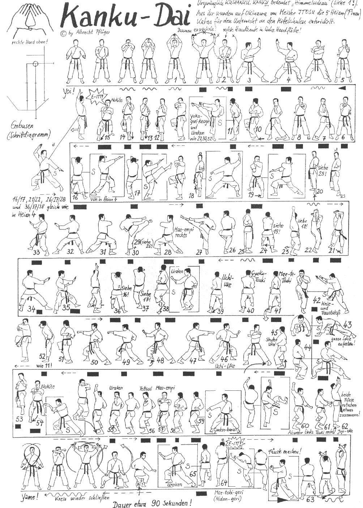

Kanku Dai

- Yoi andando in Hachiji Dachi braccia stese verso il basso mani aperte, il pollice e l'indice destro vanno a coprire le punte dei corrispondenti della sinistra formando un “rombo”.
- Sollevo le mani in avanti seguendo con lo sguardo fino alla verticale.
- Apro le mani lentamente come per descrivere un cerchio verso la fine accelero il ritmo congiungendo le mani a "T" dove la sinistra è perpendicolare al corpo e la destra appoggia con il taglio sul palmo della sinistra.
- Eseguo Hidari Shuto Uchi Jodan in Kokutzu Dachi.
- Eseguo Migi Shuto Uchi Jodan in Kokutzu Dachi.
- Richiamo la gamba sinistra in Hachiji Dachi e le braccia al fianco destro.
- Eseguo Tate Shuto sinistro.
- Oi Tzuki destro, ruoto le anche ed eseguo Uchi Uke destro.
- Recupero la posizione, Oi Tzuki sinistro, ruoto le anche ed eseguo Uchi Uke sinistro.
- Richiamo la gamba sinistra e ruotando di schiena di 90° eseguo Migi Yoko Geri e Uraken Uchi.
- Richiamo la gamba destra, scendo in Kokutzu Dachi in Mawatte ed eseguo Hidari Shuto Uke.
- Avanzo due volte in Shuto Uke.
- Osae Uke sinistro e avanzo in Yohon Nukite. Kiai.
- Mawatte Hidari Shuto Uke Gedan, Age Uke sinistro mano aperta Shuto Uchi destro.
- Eseguo Mae Geri destro, mentre scendo richiamo la gamba destra in Mawatte e vado in Kokutzu Dachi sinistro eseguendo Gedan Barai sinistro Jodan Uchi Uke destro.
- Ruoto le anche andando in Zenkutsu Dachi ed eseguo Shuto Uke sinistro all'orecchio e Nukite destro Gedan.
- Richiamo la gamba sinistra in Teiji Dachi tenendo fermo il braccio sinistro, il destro va al fianco.
- Scendo in Zenkutsu Dachi ed eseguo Hidari Shuto Uke Gedan, Age Uke sinistro mano aperta Shuto Uchi destro.
- Eseguo Mae Geri destro, mentre scendo richiamo la gamba destra in Mawatte e vado in Kokutzu Dachi sinistro eseguendo Gedan Barai sinistro Uchi Uke destro.
- Ruoto le anche andando in Zenkutsu Dachi ed eseguo Shuto Uke sinistro all'orecchio e Nukite destro Gedan.
- Richiamo la gamba sinistra in Teiji Dachi tenendo fermo il braccio sinistro, il destro va al fianco.
- Eseguo Yoko Geri sinistro e Uraken Uchi sinistro caricandolo al fianco destro, apro la mano sinistra e colpisco con Mawashi Empi Uchi destro ad altezza spalla.
- Eseguo Yoko Geri destro e Uraken Uchi destro caricandolo al fianco sinistro, apro la mano destra e colpisco con Mawashi Empi Uchi sinistro ad altezza spalla.
- Mawatte in Kokutzu Dachi Shuto Uke sinistro.
- Avanzo di un passo a 45°, paro con Shuto Uke destro.
- Sposto la gamba avanti e mi riporto sulla perpendicolare, paro con Shuto Uke destro.
- Avanzo di un passo e paro con Shuto Uke sinistro.
- Sposto la gamba sinistra ed eseguo Shuto Uke Gedan, Age Uke sinistro mano aperta Shuto Uchi destro.
- Eseguo Mae Geri destro, mentre scendo avanzando richiamo la gamba sinistra in Kosa Dachi ed eseguo Otoshi Uraken Uchi destro.
- Arretro la gamba sinistra ed eseguo Uchi Uke destro seguito da Ren Tzuki.
- Mawatte eseguo contemporaneamente Hittsui Geri e Morote Age Tzuki destro, Kiai, richiamo entrambe le braccia ai fianchi e appoggio i palmi a terra.
- Mawatte Shuto Uke sinistro Gedan.
- Avanzo ed eseguo Shuto Uke destro Chudan.
- Ruoto di schiena di ¾ ed eseguo Uchi Uke sinistro Gyaku Tzuki.
- Mawatte Uchi Uke destro Ren Tzuki.
- Richiamo la gamba sinistra e ruotando di schiena di 90° eseguo Yoko Geri (Calcio spinto laterale) destro e Uraken Uchi.
- Richiamo la gamba destra, scendo in Kokutzu Dachi in direzione opposta ed eseguo Shuto Uke sinistro.
- Osae Uke sinistro e avanzo in Nukite destro.
- Rotazione sull’asse orizzontale e richiamo della mano destra in verticale verso la fronte.
- Ruoto di schiena vado in Kiba Dachi ed eseguo Otoshi Uraken Uchi sinistro.
- Piccolo spostamento eseguendo Tettsui Uchi sinistro.
- Haishu Uke sinistro ed Empi Uchi destro.
- Richiamo i pugni sul fianco sinistro e eseguo Gedan Barai verso destra.
- Mikazuki Geri sinistro e Hidari Ude Uke Gedan sinistra.
- Eseguo Otoshi Tzuki andando ad incrociare dietro il braccio sinistro.
- Richiamo al plesso ed eseguo Juji Uke Jodan.
- Ruoto di ¾ spostando la gamba sinistra e vado in Zenkutsu Dachi destro.
- Eseguo un doppio calcio in salto (Ren Tobi Geri) e atterrando eseguo Otoshi Uraken Uchi. Kiai.
- Ampia spazzata con la gamba e il braccio destro e salgo in Hachiji Dachi con doppio Uchi Uke Jodan.
- Yame! Richiamo la gamba destra e torno in posizione di Yoi!